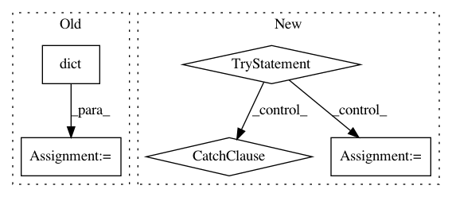

cb9e063c1df6f3ffb2c1dcc9581955f0a8cd57f7,tensorforce/tests/test_precision.py,TestPrecision,test_precision_dqn,#TestPrecision#,30
Before Change
actions = dict(type="int", shape=(), num_values=3)
network = [dict(type="dense", size=32), dict(type="dense", size=32)]
self.unittest(
name="precision-dqn", states=states, actions=actions, agent=DQNAgent, network=network
)
After Change
config = dict(update_mode=dict(batch_size=2))
def test_precision_dqn(self):
try:
util.np_dtype_mapping = dict(
bool=np.bool_, int=np.int16, long=np.int32, float=np.float16
)
util.tf_dtype_mapping = dict(
bool=tf.bool, int=tf.int16, long=tf.int32, float=tf.float16
)
states = dict(type="float", shape=(1,))
actions = dict(type="int", shape=(), num_values=3)
network = dict(type="auto", internal_rnn=False)
self.unittest(
name="precision-dqn", states=states, actions=actions, agent=DQNAgent,
network=network
)
except Exception:
self.assertTrue(expr=False)
finally:
util.np_dtype_mapping = dict(
bool=np.bool_, int=np.int32, long=np.int64, float=np.float32
)
util.tf_dtype_mapping = dict(
bool=tf.bool, int=tf.int32, long=tf.int64, float=tf.float32
)
def test_precision_vpg(self):
try:
util.np_dtype_mapping = dict(
bool=np.bool_, int=np.int16, long=np.int32, float=np.float16
In pattern: SUPERPATTERN
Frequency: 5
Non-data size: 5
Instances
Project Name: reinforceio/tensorforce
Commit Name: cb9e063c1df6f3ffb2c1dcc9581955f0a8cd57f7
Time: 2019-02-04
Author: alexkuhnle@t-online.de
File Name: tensorforce/tests/test_precision.py
Class Name: TestPrecision
Method Name: test_precision_dqn
Project Name: mne-tools/mne-python
Commit Name: 15866de8908d37337930a2afa2a54277a8a78ebe
Time: 2020-05-22
Author: larson.eric.d@gmail.com
File Name: mne/conftest.py
Class Name:
Method Name: matplotlib_config
Project Name: facebookresearch/visdom
Commit Name: 1753e20f4ba805cb94d3646d472c53bc8d990a2a
Time: 2017-10-05
Author: jju@fb.com
File Name: py/server.py
Class Name: PostHandler
Method Name: post
Project Name: reinforceio/tensorforce
Commit Name: cb9e063c1df6f3ffb2c1dcc9581955f0a8cd57f7
Time: 2019-02-04
Author: alexkuhnle@t-online.de
File Name: tensorforce/tests/test_precision.py
Class Name: TestPrecision
Method Name: test_precision_vpg
Project Name: neuropsychology/NeuroKit.py
Commit Name: cfd6bac15bae8a42cac9453baff3ef8022798e20
Time: 2017-08-28
Author: dom.mak19@gmail.com
File Name: neurokit/eeg/eeg_data.py
Class Name:
Method Name: eeg_to_all_evokeds